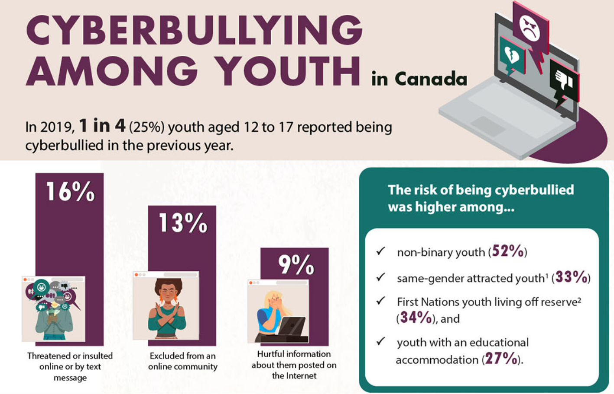

Communication technology is a huge part of our everyday lives. We use it to communicate with others online, learn new things, and share information. However, it is important that we understand how to use this technology safely. This blog will go over privacy and safety issues in communication technology and the ethical issues that may emerge in creating or sharing media.
Privacy is very important online. Your information that you share online can stay there forever and it's extremely hard to permanently delete something. You may have also heard of a “digital footprint” where the sites you visit and the data you upload leaves a trail of information about what you do. This type of information is tracked through your IP address, cookies, location, that websites can track about you.
There are a lot of safety issues in communication technology that you should learn to avoid. First, phishing is a huge problem but is relatively easy to notice. Phishing is the use of fake emails or phone calls that try to get important information such as your account passwords and information. Most require you to input your information or download something which could lead to malware. You can avoid this by looking for any typos or suspicious links in emails. You should also make sure that the website you are on is the real official website and not a copy that could potentially be a phishing link.
Malware or malicious software is any software that is made with the intent to steal or harm your device. It can either harm, steal information, or record your activity. Malware is usually attached to phishing links, emails, and websites. They can also be hidden in fake downloads or malicious ads. There are many types of malware including viruses, ransomware, trojan horses and many more. These are all designed to harm your device and information stored. Preventing and avoiding malware isn’t easy but if you can learn how to spot and avoid it. First, don’t download anything suspicious. This can include free downloads or ads for downloads. If you do download something, research online to see if the program you are downloading is safe and trustable. Second, update your computer and software programs. The updates usually have more security features that help prevent and keep you safe from malware. Finally, use an antivirus. Antivirus can help scan your downloads before you download them. They can also run full system scans to check for anything malicious on your device. You should also do full system scans every so often to make sure nothing is hiding in your device.
Oversharing is a very big problem online. Most people online are now very open about their life. You can see this on many platforms such as Facebook, Instagram, TikTok, and other social media. People tend to post pictures of themselves or what they may be doing. This is fine as long as nothing important is posted and for some people such as celebrities and influencers who may have followers, this is a big part of their job. However, even normal people are posting their daily lives online. This may appear as a way for them to stay connected with friends or family but a lot of people would stress about how others see them. People would focus so much on how they look online that they would do things they don’t like or try to get the perfect picture for a post and make sure their lives look perfect to others. This fake online life can be draining mentally and also tells people online a lot about yourself. Whether intentional or not, oversharing may lead to people to know a lot of things about you which could be good or bad.
There are many ethical issues in creating and sharing media. People use media to do harmful things to others. Because everything is online, people don’t care about the consequences and can create or share negative things. Some companies may also use media negatively, such as influencing others or collecting private information from users. These ethical issues are important and should be avoided by companies and individuals.
People use social media for many things. We post things online, ask questions, share opinions, and many other things. However, the internet is for the most part, not that restricting so people can post nasty things to each other. Cyberbullying is a big problem that happens online. According to the U.S government, In 2021-22, 21.6% of people being bullied were bullied online. In Canada, 1 in 4 people aged 12-17 were being bullied online in 2019. People tend to not care about consequences when they're behind a screen. On top of that, bullying on the internet can be anonymous and hard to track down. These factors make cyberbullying a big issue that people still do.
Companies may also use media unethically. Some companies or websites collect data from their users and sell it to other companies for things such as advertising. This is somewhat legal depending on the data but it is immoral. For example: youtube could see what you watch on their website and use that information to show your targeted ads. Other companies such as TikTok or Temu also collect a lot of information.
Some companies have also been involved in scandals in the past. Facebook was involved in a huge scandal called the Facebook-Cambridge scandal. An app called “thisisyourdigitallife” was created with Cambridge Analytica which collected information about users. It also took information from the users Facebook profiles and their friends. In total it took about 87 million users data. The data was stated to be only used for academic purposes but was later used to assist the presidential campaigns of Ted Cruz and Donald Trump. This example is a huge reason why collecting data is highly unethical. The data was used for promoting political topics and not for its intended purpose.